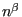
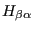
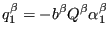

This is the Cailletaud single crystal model reduced to the creep case, i.e. the yield surface is reduced to zero.
The material definition consists of a *MATERIAL card defining the name of the material. This name HAS TO START WITH ''SINGLE_CRYSTAL_CREEP'' but can be up to 80 characters long. Thus, the last 60 characters can be freely chosen by the user. Within the material definition a *USER MATERIAL card has to be used satisfying:
First line:
Following line:
Repeat this line if needed to define complete temperature dependence.
The crystal principal axes are assumed to coincide with the global coordinate system. If this is not the case, use an *ORIENTATION card to define a local system.
For this model, there are 24 internal state variables:
These variables are accessible through the *EL PRINT (.dat file) and *EL FILE (.frd file) keywords in exactly this order (label SDV). The *DEPVAR card must be included in the material definition with a value of 24.
Example: *MATERIAL,NAME=SINGLE_CRYSTAL *USER MATERIAL,CONSTANTS=21 135468.,68655.,201207.,1550.,3.89,980.,3.89,400. *DEPVAR 24
defines a single crystal with elastic constants , octaeder parameters  and cubic parameters  for a temperature of 400.